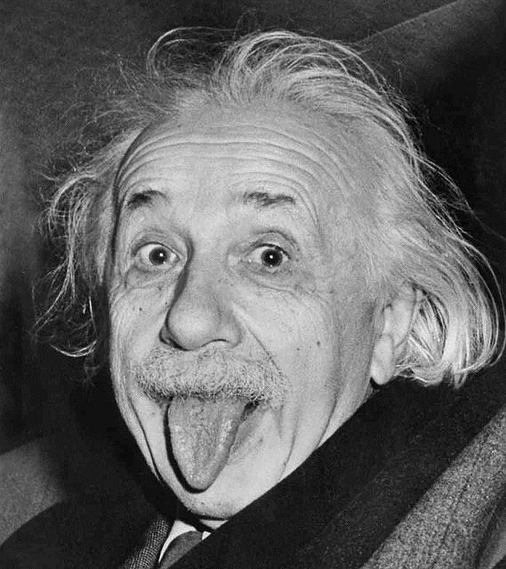
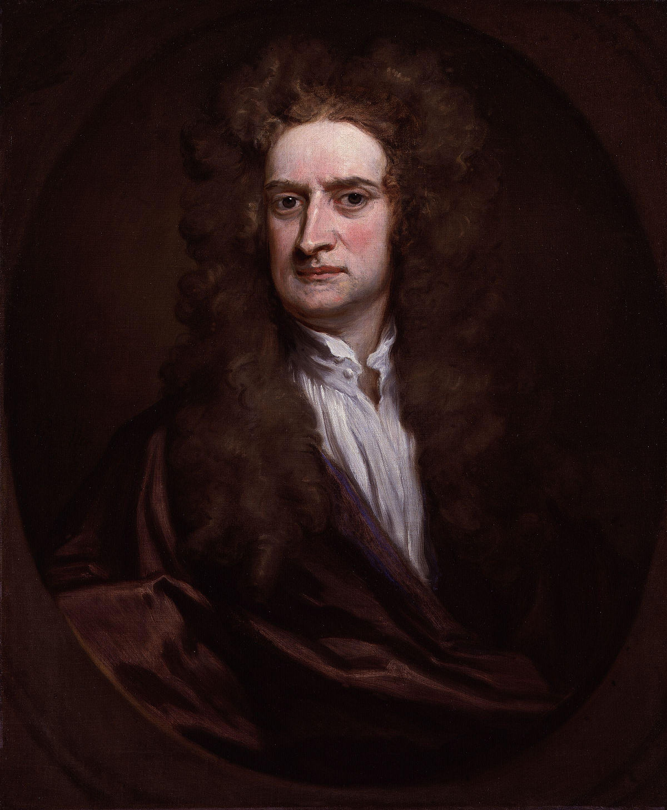
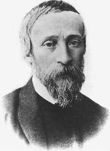

| Tu zapisz kolejno roki w jakich żyli dani naukowcy | 1892 | 1893 | 1894 | .... | 1945 | |
| Maria Skłodowska-Curie | 1892 | 1893 | 1894 | .... | 1945 | |
| Albert Einstein | 1892 | 1893 | 1894 | .... | 1945 | |
| Isaac Newton | 1892 | 1893 | 1894 | .... | 1945 | |
| Stefan Bach | 1892 | 1893 | 1894 | .... | 1945 | |
| Ignacy Łukasiewicz | 1892 | 1893 | 1894 | .... | 1945 |